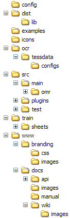

Purpose of this implementation manual is to help any programmer's task: understanding the source code, modifying existing functions, adding new features, etc...
|  |
On audiveris main frame, all user actions trigerred via pulldown menus or via tool bar buttons are now implemented as plugins.
These can be system plugins which are predefined in the Audiveris release, or can be user plugins supplied by the user himself as an added feature. The only difference between system and user plugins, besides their origin, is the fact they are referenced in config/system-actions.xml for the former, and in config/user-actions.xml for the latter.
Let's take a (rather comprehensive) line taken out of system-actions.xml:
<action
domain="VIEW"
section="EDIT"
class="omr.glyph.ui.ViewParameters"
method="toggleSections"
item="javax.swing.JCheckBoxMenuItem"
button="javax.swing.JToggleButton"
/>
This line can be read as follows: In the VIEW pulldown menu, insert in the section EDIT a menu item (precisely an instance of javax.swing.JCheckBoxMenuItem) with a javax.swing.JToggleButton button. The item should trigger the method toggleSections to be found in class omr.glyph.ui.ViewParameters.
In the Java source code, the method (such as "toggleSections" above) must be annotated by the @Action annotation defined by the Swing Application Framework.
Visual characteristics for this action must be specified in the
related resources/ViewParameters.properties
resource file.
Depending on your locale setting, you may have a specific
additional properties file, for example
resources/ViewParameters_fr_FR.properties for the
French locale, to override default characteristics.
In these properties files, keys are built by using the method name,
appended with ".Action.", followed by the Action characteristic
identifier. The main characteristics identifiers are as follows
(see the javax.swing.Action class for a comprehensive
list):
A Sheet handles the physical entities as extracted from the printed music sheet, while the Score handles a structuring of the inferred logical entities. This distinction has led to the development of two separate packages, namely omr.sheet and omr.score.
Many entities of one package have their counterpart in the other package, with link from one instance to the other.
The following table lists the corresponding entities in omr.sheet and in omr.score packages, together with the Builder class that is in charge of extracting these entities :
| from omr.score package |
from omr.sheet package (model classes) |
from omr.sheet package (builder classes) |
|---|---|---|
| Score | Sheet | |
| System | SystemInfo | BarsBuilder handles the vertical lines that are recognized as bar lines |
| Stave | StaveInfo | LinesBuilder processes the stave areas, according to the series of peaks found in the horizontal projection. |
| LineInfo | LineBuilder processes the horizontal area that corresponds to one histogram peak, and thus to one stave line. | |
| Measure | BarInfo | BarsBuilder processes the vertical lines that are recognized as bar lines. |
| Ledger | HorizontalsBuilder retrieves horizontal dashes in the given sheet. We use it for all horizontal glyphs (ledgers of course, but also legato signs or alternate endings). | |
| Ending | see HorizontalsBuilder above | |
| Stick (vertical) | VerticalsBuilder retrieves all the vertical sticks of all systems in the sheet at hand. Bars are assumed to have been already recognized, so this accounts for stems, vertical edges of endings, and parts of alterations (sharp, natural, flat). | |
| Glyph | GlyphBuilder gathers non-assigned remaining glyphs out of a sheet. |
All the music entities are organized in Systems, read from left to right. Since System is actually an entity within the omr.score package, here in the omr.sheet package we use the class SystemInfo.
A SystemInfo is the repository for all physical entities found within the System, such as Glyph's, BarInfo's, Ledger's, StaveInfo's, and the like.
So, the general schema to browse through all sheet entities is usually similar to the following piece of code :
for (SystemInfo system : sheet.getSystems()) {
for (Glyph glyph : system.getGlyphs()) {
// Do the glyph-based processing here
}
}
All the entities that result from the phase called Music Extraction are made accessible through the collection of SystemInfo instances. The phase called Music Recognition should thus browse this collection and store its results in the Score entity.
The Score is organized as a hierarchy of instances of subclasses of MusicNode, rooted at the Score.
Each MusicNode is a tree node, with a container and a list of children. To ease the traversal of the tree, every list of children, wherever found in the tree, is a list of homogeneous entities. So the Score hierarchy can be listed as follows :
The beginning of figure above can be read as follows :
The hierarchical nature of this structure can be conveniently used by various traversals. It is used for example when the physical counterpart of each music node has to be rendered in the Sheet display (see method renderNode()).
Similarly, a ScoreView window handles the painting of Score entities, using method paintNode().
A similar construction, coupled with JAXB, is used to store the content of a Score to the MusicXML format.